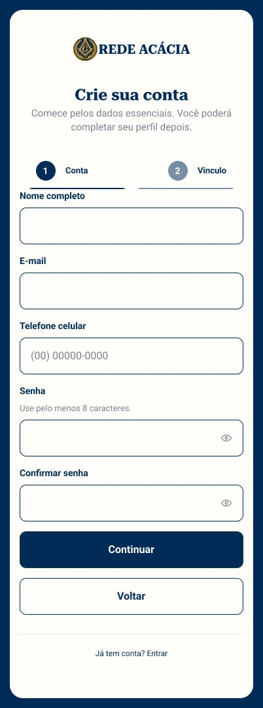
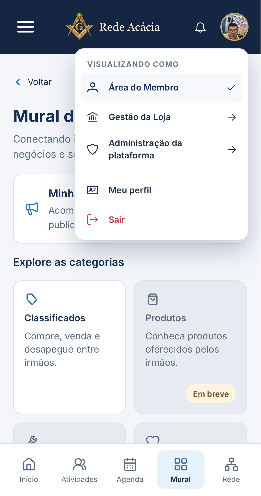
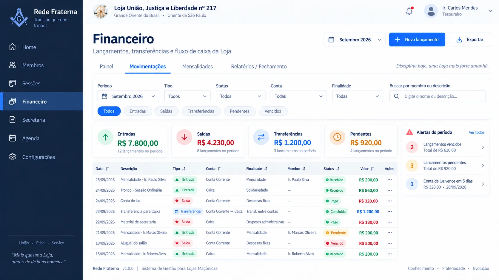
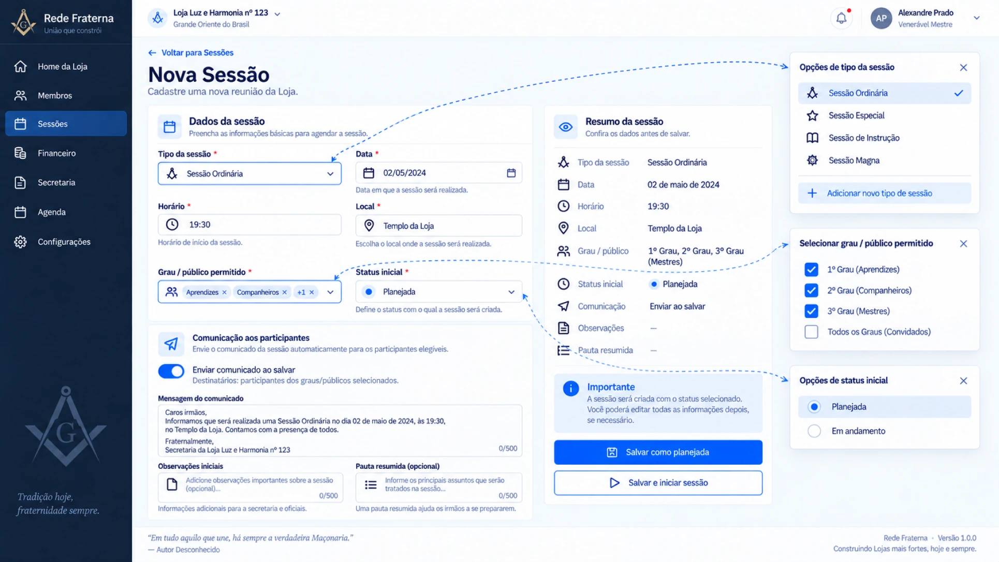

Interfaces simples.
Experiências que fazem sentido.
Sou Nikoly, estudante de Design Gráfico com foco em UX/UI, pesquisa e criação de experiências digitais centradas nas pessoas.
Conheça meus projetos ↘Projetos selecionados
01 — 03Design com clareza e intenção.
Meu interesse está em compreender problemas, organizar informações e transformar ideias em interfaces úteis. Este portfólio é dedicado a UX/UI; os trabalhos artísticos permanecem em uma experiência separada.
Rede Acácia
Uma conta, múltiplos papéis: como tornar simples a navegação entre ambientes pessoais, administrativos e profissionais.
O desafio
Uma mesma pessoa pode atuar como irmão, exercer cargos de gestão na Loja, representar um comércio ou prestar serviços. Cada papel possui funcionalidades e permissões diferentes. Como navegar entre eles sem trocar de conta ou perder a orientação?
Minha solução — autoria individual
Idealizei a alternância de contextos pelo menu associado à foto de perfil. Assim, a pessoa escolhe o ambiente em que deseja atuar e acessa as funcionalidades correspondentes ao seu papel.
Decisão em equipe
Participei da definição da centralização das notificações no sino, reunindo avisos relevantes de diferentes contextos em um único ponto, sempre respeitando as permissões de acesso.
Outras contribuições
Atuei nas telas de login e cadastro, no planejamento de interfaces e fluxogramas e no refinamento de cores, espaçamentos e tipografia, inclusive em telas inicialmente geradas por IA.
Documentação visual
Menu de alternância de contextos, login e cadastro. Selecione uma imagem para abrir a versão completa e ampliar.


Plataforma para Psicólogos
Discovery para compreender necessidades e orientar decisões de produto.
Minha participação
Entrevistas com clientes, organização das respostas, identificação de dores e apoio à definição das funcionalidades.
Próximos materiais
Inserir artefatos autorizados de pesquisa, telas e síntese das descobertas, sem expor dados de participantes.
Petshop de Bairro
Discussão e estruturação de uma ideia de produto para o agendamento de serviços em petshops.
Minha contribuição
Apoiei a definição das funcionalidades e a estruturação da jornada do usuário, organizando os fluxos entre telas e propondo soluções voltadas à usabilidade. Também participei das decisões de produto junto ao responsável pelo projeto.
Exploração visual inicial
Durante as discussões sobre a ideia do produto, esta imagem foi gerada para ajudar a visualizar um possível fluxo de agendamento e orientar a conversa sobre as telas e prioridades da primeira versão.
É uma referência conceitual dessa etapa de discussão; não representa a interface final nem uma solução implementada.
Rede Acácia — Administração
Registros visuais das interfaces administrativas e da organização de informações no Figma.

